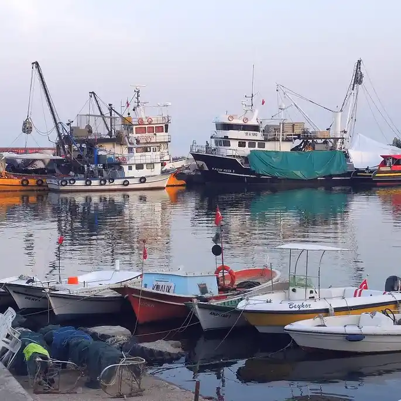
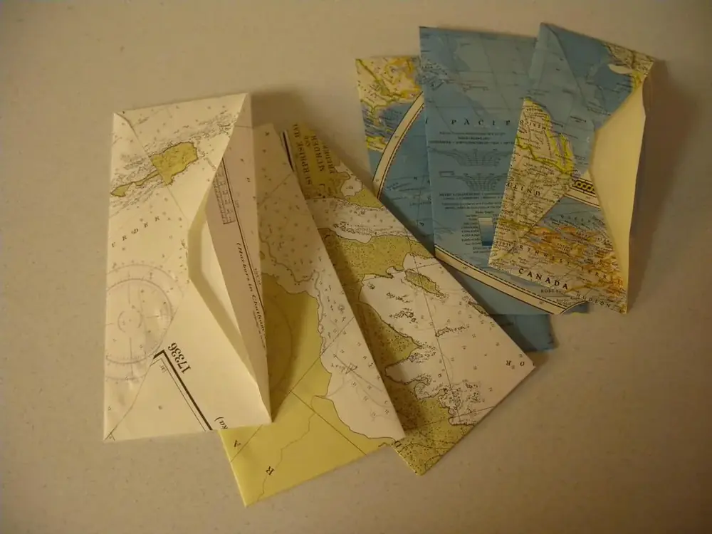

Harbour and bay prints
Working harbours and sheltered bays drawn with their quays, moorings and soundings in fathoms. The land is left pale so the water does the talking.
Harbour printsHarbour & lighthouse art prints · Falmouth, Cornwall
Fine-line drawings of harbours, bays and lighthouses, with soundings, a compass rose and the curl of every headland, printed as giclées on heavy cotton rag paper.
Drawn at 50°09′N, 5°04′W · decorative prints, never for use at sea

Five things, all of them on paper, all of them made here in Falmouth.
Working harbours and sheltered bays drawn with their quays, moorings and soundings in fathoms. The land is left pale so the water does the talking.
Harbour printsA series of headland lights, each drawn with its rock, its light sector and the bearing a ship would hold to clear it. Tall format, good in pairs.
Lighthouse printsAny place in the catalogue redrawn in two inks you choose from our card, so the sea matches a sofa or the land matches a wall. No extra charge.
The colourwaysSolid oak mouldings, left natural or stained black, with a white mount and clear acrylic glazing. Made up to order for A3 and A2.
Framing and sizesA kraft tube closed with a red wax seal and a folded card carrying your words, so the print can go straight to the person it is for.
Posting a giftNot sure which harbour reads best at A4, or whether a pair should hang side by side? Write to the studio and you will get a straight answer.
About the studioThese are the whole price list. Each drawing below is the sheet at true relative scale; the colour of the frame is the oak.
210 × 297 mm on cotton rag, rolled
£28
See the drawings297 × 420 mm on cotton rag, rolled
£42
See the drawings420 × 594 mm on cotton rag, rolled
£64
See the drawingsA3 sheet, white mount, glazed, ready to hang
£98
See the framesA2 sheet, white mount, glazed, ready to hang
£145
See the framesKraft tube, wax seal and a folded card in your words
£6
How gifts are posted7Cs Designs is a small print studio in Falmouth that draws one thing: the coast as a chart-maker would have seen it, a long time before satellites. Every place in the catalogue starts with a visit, often by boat, because a harbour reads differently from the water than it does from the quay. We note where the moorings lie, where the channel bends, which headland hides the entrance until the last moment, and how the light on the end of the breakwater sits against the town.
Back at the table, the drawing is built up by hand in fine line: the coastline first, then contour shading on the land, then the soundings, scattered across the water in the small italic figures you see on old charts. A compass rose goes where it would sit on a real sheet, and the title cartouche is lettered in the same spirit. The finished drawing is scanned and printed as a giclée with pigment inks on heavy cotton rag, which gives the matt, slightly soft surface that makes a chart look like a chart rather than a poster.
What we value is plain enough: careful drawing, honest paper, and a print that still looks right in twenty winters' time. The refusals are short and firm. These prints are decoration, so we will not sell anything as a working chart, and we do not trade in old original charts either. We only draw the places in our own catalogue, and we sell to people hanging prints in their own homes rather than to shops buying stock.

No. Every sheet is a decorative drawing in the manner of an old chart. The soundings, bearings and coastlines are drawn for the eye and simplified on purpose, so they are not kept up to date and must never be used to plan or steer a passage. Buy proper current charts for that; buy ours for the wall.
A4 sits well on a shelf, a desk or a narrow strip of wall beside a door. A3 is the size most people choose for a hallway or above a small chest. A2 holds its own above a sofa or a bed, or as the single picture on a chimney breast. If in doubt, cut a sheet of newspaper to size and tape it up for a day.
Yes. Both framed sizes come glazed with clear acrylic rather than glass, which is lighter on the wall and does not shatter in transit. The print sits behind a white mount so the paper never touches the glazing.
Unframed prints leave the studio within three working days and usually arrive in one to three working days inside the United Kingdom. Framed prints are made up to order and leave within seven working days. The delivery page lists every region and its cost.
Yes, within thirty days of it reaching you, as long as it is unmarked and comes back in its tube or crate. Prints in a colourway you chose for yourself can only come back if they are faulty. The returns page sets out how the refund is made.
Not at the moment. Each harbour and lighthouse in the catalogue takes weeks of drawing, and we would rather do those well than take one-off commissions. You can still change the colours of any listed place.
Choose the place, the size and the frame. We reply with your total and a payment link, and the print is made once you have paid.
Order a printprints@7csdesigns.com
Read every working day; most replies go out the same day.
Monday to Friday, 9.30am to 5pm. Orders placed at the weekend are answered on Monday morning.
Falmouth, Cornwall, England. Rolled prints go anywhere in the UK, Europe and beyond; framed prints within the UK only. Order a print.
We keep one small consent note in your browser and nothing else. No analytics or advertising cookies run on this site unless you agree. The privacy notes explain more.